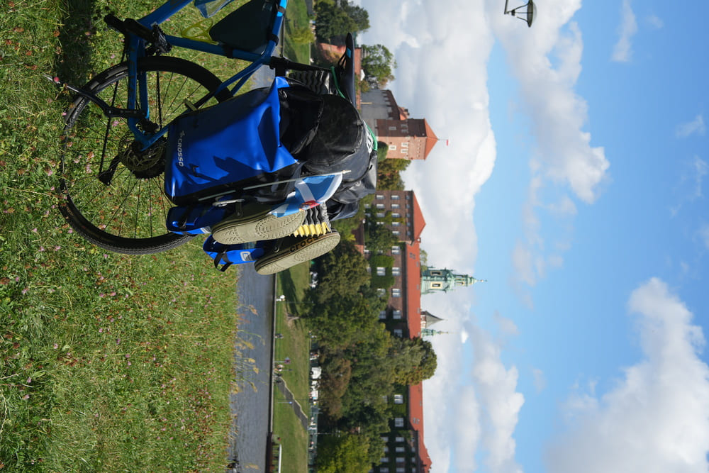
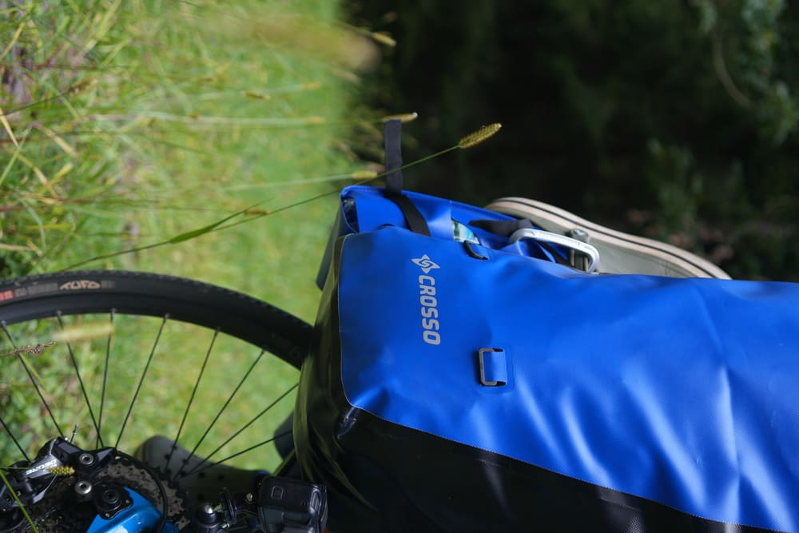
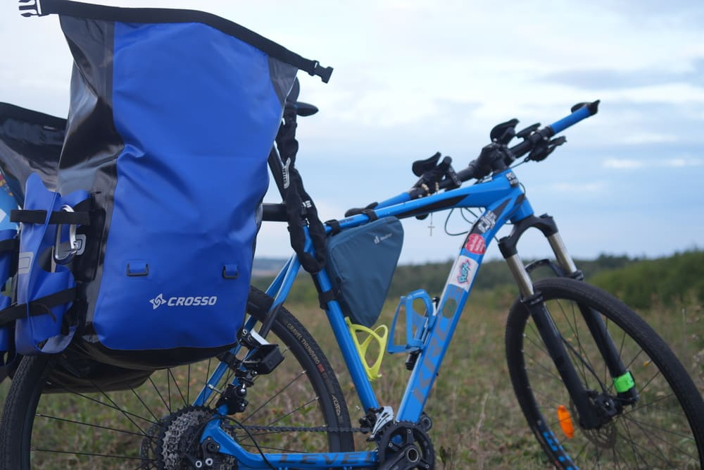
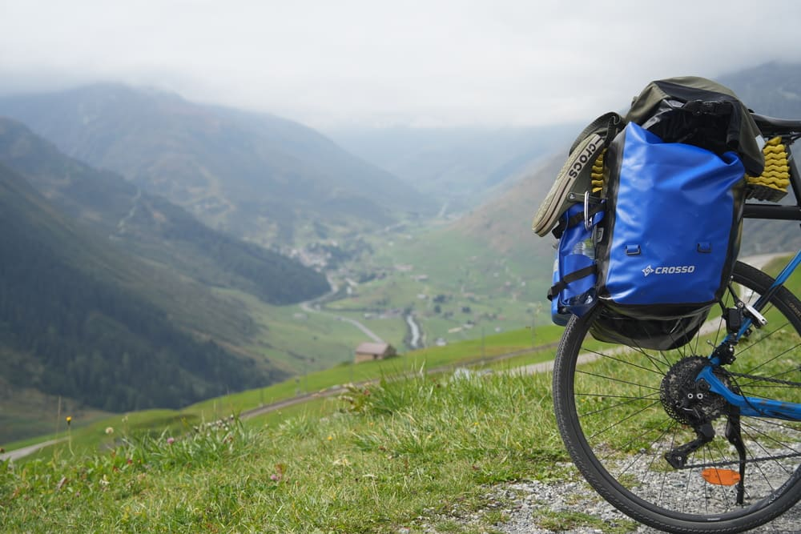
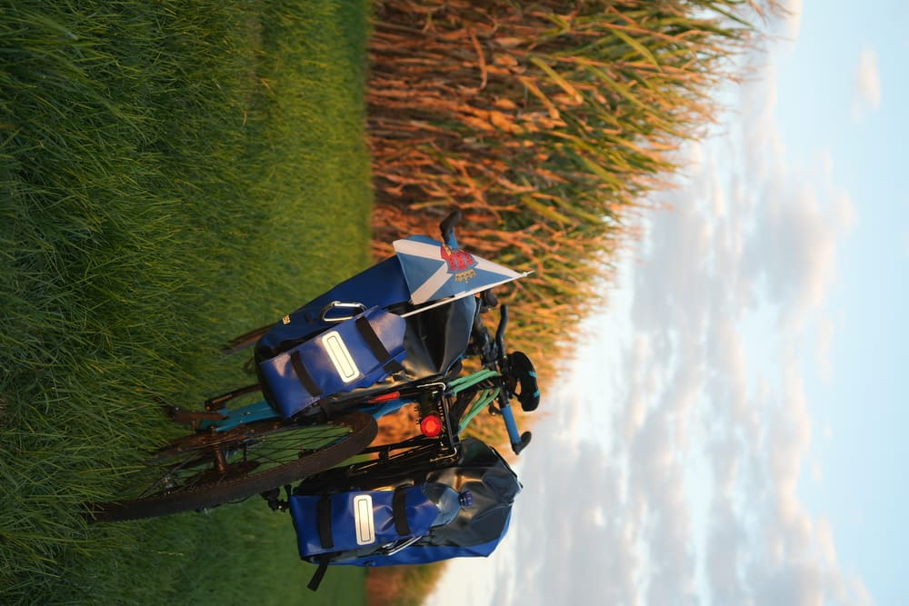
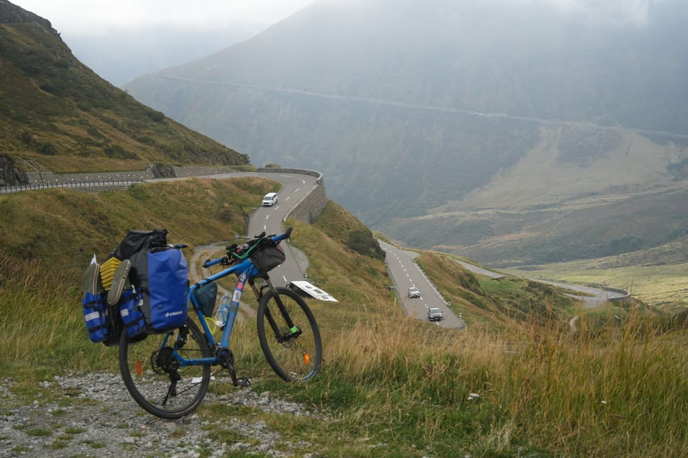
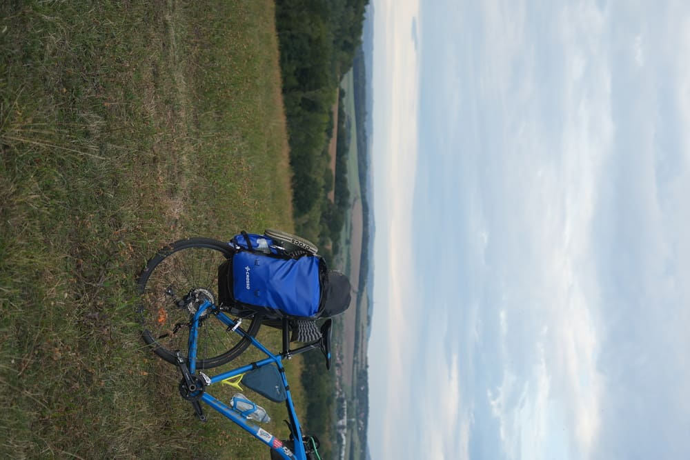
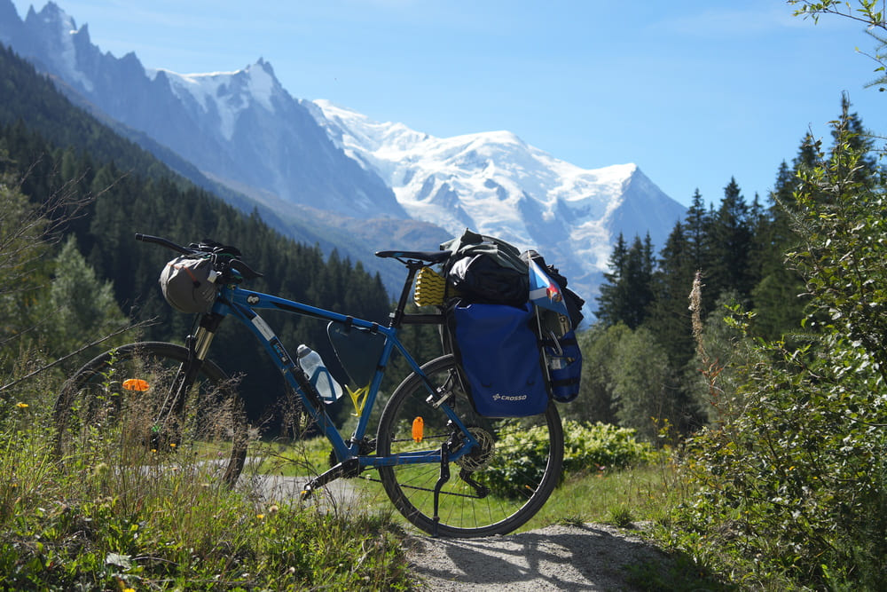

Crosso Dry X60 setup
My thoughts and honest review after the Mont Blanc trip
The panniers — Dry X60
A quick bit of context first. Before this year's Kraków → Chamonix bikepacking trip, I reached out to Crosso looking for support with the gear. They came through and sent me a full setup — the Dry X60 panniers, two Dry X side pockets, and the Trio organizer. I'd already done my first big bikepacking trip in 2021 (Kraków towards the sea, which eventually ended in Warsaw) on a different set of bags, so I had a pretty clear idea of what I wanted this time around. I took the Crosso setup on a few prep rides and then through the actual 1,400 km / 13,000 m route to Chamonix, so I think I've put it through enough to write a proper review.
The headline here is ridiculously waterproof. I had a few occasions to test it in the rain and not once did I have to worry about what was inside — everything stayed dry. This alone is huge, because on a long trip, wet gear is miserable gear.
Beyond that, the panniers feel genuinely durable. Not a single tear, no stressed seams, no failures across the entire trip — including a few drops and some scrapes along the way. The metal hooks are the main reason I feel this way: they give you that solid, trustworthy feeling that nothing is going to snap on you halfway up a climb. The hook on the bottom does its job too, keeping the panniers firmly in place on the rack even over rough roads and gravel. I never had one come loose, not once.
As for capacity — 60 litres total was more or less enough for everything I needed on a two-week trip. I didn't pack the tent inside; it stayed on the outside along with a few other bits, and that made it work. If I were to add one thing to the setup, it would be the Dry X top cover — with that, I think the capacity would be absolutely ideal. Packing itself is straightforward too. Roll-top opening, no fiddly zippers to fail on you.



The side pockets — Dry X
Honestly, these might be my favourite thing in the whole setup. An absolutely genius little patent. The pockets attach to the sides of the main panniers and give you quick-access storage for everything that doesn't belong inside the main bag — water bottles, shoes, random odd-shaped stuff you want to grab fast without unpacking half the bike.
But the real magic is this: you can throw wet gear into them. Rainy day, soaked gloves or socks? Straight into the side pocket. They dry on the move and don't contaminate the dry stuff inside the panniers. Same thing with dirty gear — muddy shoes, anything greasy — it all stays outside the main bags.
They're also surprisingly flexible when it comes to shape. Whatever weirdly-shaped object you need to carry, somehow it fits.


The organizer — Trio
If you're the kind of person who likes everything in its place, the Trio organizer is excellent. Three separate sub-bags that drop neatly inside the main pannier. One of them is a mesh variant, which turned out to be perfect for food — you can see what's inside without opening it, and it breathes properly.
The handles on each sub-bag are colour-coded, which sounds like a small detail but genuinely helps a lot when you're tired at the end of a long day and need to grab the right bag fast. The handles also make it really easy to pull the sub-bags out of a packed pannier.
One small gripe: when you stuff the organizer bags completely full, they get a bit tight going back into the main pannier. Nothing dramatic, but you do have to wrestle them in a little. If you keep them reasonably packed rather than bursting, it's fine.
There are also small external pockets on the organizer bags — a nice touch for little items you want to find instantly. Build quality is solid too: the materials feel genuinely durable and well-made, same standard as the panniers themselves.
One honest recommendation: if you like organization, grab one set — not two. On my trip I ended up using the Trio in one pannier for all my organized gear, and in the other I preferred to just stuff compressed clothes in loose. They wouldn't have fit the organizers anyway, and that mix of "organized on one side, loose on the other" turned out to be the sweet spot for me.


Verdict
9.5/10. The Crosso Dry X60 setup, together with the Dry X side pockets and the Trio organizer, is honestly as good as I could ask for from a bikepacking luggage system. Durable, extremely waterproof, well thought-out, and the side pockets alone are worth it. The only reason I'm not giving a straight 10 is the slightly tight organizer-in-pannier fit when fully loaded — but that's a minor thing, and honestly my setup for the Mont Blanc trip would have been noticeably worse without any of these three components.
Big thanks to Crosso for the support. If you're planning a longer bikepacking trip, this is a setup I can genuinely recommend.

Crosso Dry X60 setup with Mont BlancPeace, Kuba